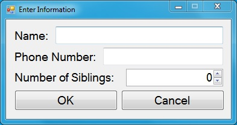

Let's begin by considering a simple example. Suppose we are building an application that needs a dialog to obtain from the user the following pieces of information:

After the user enters the information, clicking "OK" will cause the information entered to be displayed in the main window. If the user clicks "Cancel", the main window will be unchanged.After building the main form in Visual Studio's Design Window, we can build the dialog by creating another form. To do this, in the Solution Explorer, right-click on the project name and select "Add‑>Windows Form...". This will open a dialog for adding a new item, where the type of item is pre-selected to be a Windows Form. You will need to supply a name for the form. This name will serve as both a file name for a source file and the name of a class defined within this file. For example, we could choose the name, "InformationDialog.cs", and the class will be named InformationDialog. Clicking the "Add" button will then open a new Design Window containing a form.
We can then use the Design Window to build this form as we would build any other form. In addition, the Button class has a DialogResult property that governs certain behavior when buttons are used within a dialog. This property is of type DialogResult. Setting it to a value other than None will cause the button to do the following when clicked, provided the form is displayed as a modal dialog:Furthermore, the Form itself has two properties that can be set to provide shortcuts for these buttons. The AcceptButton property, of type IButtonControl (a super-type of Button), can be used to cause the "Enter" key to activate a button on the form, as if that button had been clicked. Thus, we could set this property to the "OK" button. Similarly, the CancelButton property (also of type IButtonControl) can be used to cause the "Esc" key to activate a button on the form. We could therefore set this property to the "Cancel" button.
While we don't need any event handlers for this dialog, we still need to provide code to allow the class for the main window to access the values provided by the user. This can be accomplished with three public properties, one for each of the three pieces of information the user can provide:
/// <summary>
/// Gets the name. (There is already a Name property inherited from
/// the Form class, so we will use FullName.)
/// </summary>
public string FullName
{
get
{
return uxName.Text;
}
}
/// <summary>
/// Gets the phone number.
/// </summary>
public string PhoneNumber
{
get
{
return uxPhoneNumber.Text;
}
}
/// <summary>
/// Gets the number of siblings.
/// </summary>
public int Siblings
{
get
{
return (int)uxSiblings.Value;
}
}
In order for the main window to be able to display this dialog, it
needs to construct an instance of it. We can add to its class
definition a private field initialized to such an instance:
/// <summary> /// The dialog for obtaining information from the user. /// </summary> private InformationDialog uxInformation = new InformationDialog();Finally, we need an event handler for the "Get New Information" button. This event handler needs to display the InformationDialog as a modal dialog, and if the user closes it with the "OK" button, to copy the information provided by the user to the main window. A Form provides two methods for displaying it as a dialog:
/// <summary>
/// Handles a Get New Information event.
/// </summary>
/// <param name="sender"></param>
/// <param name="e"></param>
private void uxNew_Click(object sender, EventArgs e)
{
if (uxInformation.ShowDialog() == DialogResult.OK)
{
uxName.Text = uxInformation.FullName;
uxPhoneNumber.Text = uxInformation.PhoneNumber;
uxSiblings.Text = uxInformation.Siblings.ToString();
}
}
This zip archive
contains the complete program described above.